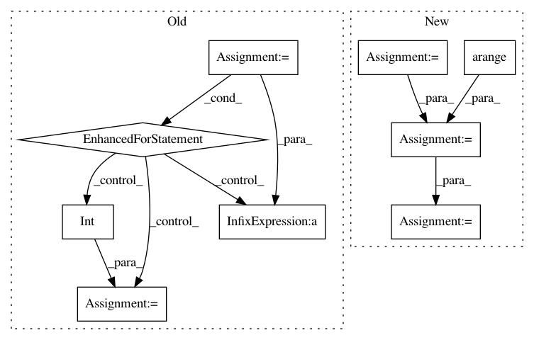

f5eb80d221fec8690e8cfb087256671545bb9a5a,examples/pytorch/graphsage/train_sampling_unsupervised.py,SAGE,inference,#SAGE#Any#Any#Any#Any#,130
Before Change
for l, layer in enumerate(self.layers):
y = th.zeros(g.number_of_nodes(), self.n_hidden if l != len(self.layers) - 1 else self.n_classes)
for start in tqdm.trange(0, len(nodes), batch_size):
end = start + batch_size
batch_nodes = nodes[start:end]
block = dgl.to_block(dgl.in_subgraph(g, batch_nodes), batch_nodes)
block = block.int().to(device)
input_nodes = block.srcdata[dgl.NID]
h = x[input_nodes].to(device)
h = layer(block, h)
if l != len(self.layers) - 1:
h = self.activation(h)
h = self.dropout(h)
y[start:end] = h.cpu()
x = y
return y
class CrossEntropyLoss(nn.Module):
After Change
for l, layer in enumerate(self.layers):
y = th.zeros(g.number_of_nodes(), self.n_hidden if l != len(self.layers) - 1 else self.n_classes)
sampler = dgl.dataloading.MultiLayerFullNeighborSampler(1)
dataloader = dgl.dataloading.NodeDataLoader(
g,
th.arange(g.number_of_nodes()),
sampler,
batch_size=args.batch_size,
shuffle=True,
drop_last=False,
num_workers=args.num_workers)
for input_nodes, output_nodes, blocks in tqdm.tqdm(dataloader):
block = blocks[0].to(device)
h = x[input_nodes].to(device)
h = layer(block, h)
if l != len(self.layers) - 1:
h = self.activation(h)
h = self.dropout(h)
y[output_nodes] = h.cpu()
x = y
return y
class CrossEntropyLoss(nn.Module):
In pattern: SUPERPATTERN
Frequency: 3
Non-data size: 9
Instances
Project Name: dmlc/dgl
Commit Name: f5eb80d221fec8690e8cfb087256671545bb9a5a
Time: 2020-08-11
Author: coin2028@hotmail.com
File Name: examples/pytorch/graphsage/train_sampling_unsupervised.py
Class Name: SAGE
Method Name: inference
Project Name: PIQuIL/QuCumber
Commit Name: 57d419c21650c6bad57ba7ac6b3b14a219b16a3a
Time: 2018-08-09
Author: emerali@users.noreply.github.com
File Name: qucumber/positive_wavefunction.py
Class Name: PositiveWavefunction
Method Name: generate_hilbert_space
Project Name: PIQuIL/QuCumber
Commit Name: 57d419c21650c6bad57ba7ac6b3b14a219b16a3a
Time: 2018-08-09
Author: emerali@users.noreply.github.com
File Name: qucumber/complex_wavefunction.py
Class Name: ComplexWavefunction
Method Name: generate_hilbert_space